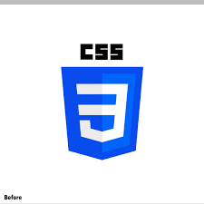

HTML ADVANCE
HTML ADVANCE përfshin duke shfrytëzuar strukturat semantike, mediat e pasura dhe elementët e specializuar për të krijuar aplikacione web të arritshme dhe me performancë të lartë përtej paraqitjeve bazë të tekstit dhe imazhit.

Vizito Linkun Per HTML Advance /a>
CSS ADVANCE
CSS ADVANCE Përfshin teknika komplekse të përdorura për të krijuar dizajne uebi që i përgjigjen nevojave, janë dinamike dhe vizualisht të sofistikuara, të cilat shkojnë përtej stilimit bazë.

Vizito Linkun Per CSS Advance
PYTHON
Python i referohet kryesisht një gjuhe programimi të nivelit të lartë dhe me qëllim të përgjithshëm, e njohur për thjeshtësinë dhe lexueshmërinë e saj. Është një nga gjuhët më të njohura në botë, e përdorur gjerësisht në fusha si shkenca e të dhënave, zhvillimi i uebit dhe inteligjenca artificiale.

Vizito Linkun Per PYTHON